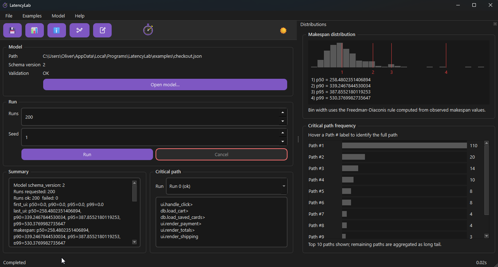

LatencyLab
A local latency exploration tool for event-driven interactive systems. It is not a profiler, tracer or runtime observer. It exists to prevent confident people from shipping bad architecture.
If the output surprises you, that is the point.
For the people who own structural decisions
LatencyLab is aimed at the roles that make structural decisions which are expensive to undo. If you have ever said "we will profile it later", this is what later should have looked like.
It is for you if
- You are a senior engineer, architect or CTO validating an architecture before it hardens.
- You want to see where perceived latency actually comes from, not where you assume it does.
- You need to know which causal paths dominate latency most often and how contention shapes responsiveness.
- You want to test which architectural changes help before any code is written.
It is not for you if
- You want to tune code that already exists. Use a profiler.
- You want a dashboard that reassures you everything is fine.
- You want generated recommendations. It does not tell you how to make a function faster.
- You want to reason about latency without committing to explicit structure. This will feel uncomfortable; that is intentional.
Find the latency problem before it is politically expensive
Profilers explain what happened in a running system. They rarely explain why the user waited. LatencyLab executes explicit models of tasks, events, queues, delays and resource contention using deterministic scheduling and reproducible randomness, then runs them many times to produce concrete metrics.
Explicit models
Tasks, events, queues, delays and feedback paths must be named. Nothing is inferred and nothing is hidden. The model is what you reason about.
Many seeded runs
Every run is seeded, so behaviour stays reproducible across versions. At scale the dominant behaviours become clearer, not noisier.
Critical paths and percentiles
Concrete critical paths name the work; percentiles are split for UI events and overall makespan because they answer different questions.
Yours, on your machine
A local CLI plus an optional desktop UI. No account, no server, no instrumentation of production code. Nothing leaves your machine.
It shows what the model produced and nothing it did not
The UI exists because text output alone was not enough to reason about timing, ordering and consequence. It is intentionally literal: it shows what ran, how often it ran and where time accumulated. Full keyboard navigation is treated as a constraint, not polish.

Run it from a clone
LatencyLab is a Python tool. The primary interface is a CLI that reads a JSON execution model; the desktop UI is a client of the same headless core. Core outputs are written as plain files you can plot or diff.
summary.jsonAggregate latency and contention statistics for the whole run.
runs.csvPer-run metrics, suitable for analysis or plotting.
trace.csvOptional per-task-instance timing and causality data.
# Clone and install (dev) git clone https://github.com/oernster/latencylab.git cd latencylab python -m pip install -e .[dev] python -m pip install -r requirements.txt # Run the desktop UI (client of the headless core) python -m latencylab_ui # Run the test suite with strict 100% coverage python -m pytest -q --cov=. --cov-report=term-missing --cov-fail-under=100